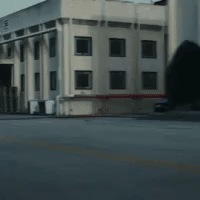

1. 직진 신호 빨간불일 때 일단 정지(순간이라도)
2. 천천히 우회전하면서
3. 보행자 신호가 빨간불이건 초록불이건 보행자가 없으면 서행으로 통과
모두 안전한 우회전 하세요~
1. 직진 신호 빨간불일 때 일단 정지(순간이라도)
2. 천천히 우회전하면서
3. 보행자 신호가 빨간불이건 초록불이건 보행자가 없으면 서행으로 통과
모두 안전한 우회전 하세요~
근대 경찰기분에 따라 잡기도하잖아
이거 어설프게 알아가지고 일시정지는 안하면서 건너는 보행자 없는데도 장판교 장비마냥 죽어라 안움직이는 차 ㅈㄴ 많음
우회전할때 횡단보도에 사람 1도없는데 2,30초 죽치고 기다리고 있는새끼들 대가리 치고싶음
ㅋㅋㅋㅋㅋ
그런 좆병신들이 횡단보도 빨간불되면 왼쪽에서 직진신호오는것때문에 또 못감 목졸라죽이고싶은새끼들 ㅋㅋ
경찰 좆대로임ㅋㅋㅋㅋ 빨간불 멈췄다 갔는데 딱지 끊음 꼬우면 이의제기 하던가하래
내 앞에 차가 우회전 횡단보도에 사람 없는데도 빨간불로 바뀔 때까지 기다림. 그 후에 직진해서 비보호 좌회전해서 아파트 단지 들어가려고 하는데, 그 아파트 단지 입구에는 횡단보도가 있었음. 근데 이 미친새끼가 횡단보도 초록불 신호에 심지어는 사람들이 건너고 있는 와중에 비보호 좌회전 갈기더니 사람들 틈 사이로 비집고 들어감 ;;; 사람 없을 때는 멈춰 있더니 사람 건널 때는 기어코 비보호 좌회전을 갈기는건 도대체 뭔 생각인지 아직도 이해안감
저게 아직도 이해가안돼?
제발 서지말고 처가라고!!!
